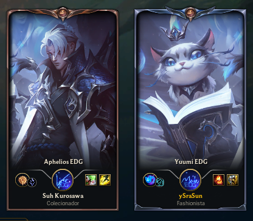

Feliz Aniversário, anjo da minha vida.
Hoje você faz mais um ano de vida e, sinceramente, eu não sei o que dizer sem parecer clichê ou repetir coisas que todo mundo provavelmente já vai falar. Então vou dizer apenas: Feliz Aniversário. Aproveite esse dia — o seu dia.
Não pense que você está ficando mais velha ou ficando sem tempo. Pense que você sobreviveu e superou mais um ano nessa vida. Fique orgulhosa de si mesma. Você já passou por muitos altos e baixos e continua aqui, firme e forte.
Eu estou muito orgulhoso de você. Acredito de verdade que você vai conquistar tudo o que quer e tudo o que merece.
Te amo muito.
Nosso Primeiro Encontro
Quando eu te conheci, eu não estava em um momento muito bom da minha vida por várias razões. Acho que isso explicava um pouco da raiva que eu carregava naquela época.
Nós nos conhecemos pelo Clash e jogamos juntos pela primeira vez. Minhas primeiras impressões foram curiosas: eu achava que você provavelmente era um homem, sabia que você tinha um gato — o que automaticamente me fazia gostar de você — e também percebi que você jogava muito bem.
Mesmo assim, fiquei com raiva depois daquela última partida. Mas, depois que aquela raiva boba do meu lado competitivo passou, alguma coisa em mim quis te conhecer melhor.
Mesmo sem estar com cabeça para conhecer pessoas novas e querendo apenas me isolar no meu grupo de amigos, você acabou sendo como um raio de luz entrando pela janela da minha vida naquele momento.
Depois disso eu fui atrás de você para pedir desculpas e tentar consertar a primeira impressão que eu tinha deixado. E você também veio conversar comigo. Em pouco tempo eu já estava feliz por conhecer alguém novo de verdade.
Sinto saudade do nosso antigo servidor onde muitas dessas memórias aconteceram. Mas você e eu lembramos delas, e para mim isso já é o suficiente.
Inclusive, apesar do seu apelido ser Moon, em um período daquela época eu achava que o nick do LoL “ySraSun” parecia muito mais preciso para você: uma pessoa alegre e energética que ia de um lado para o outro sem parar. Sinceramente gosto quando você é assim. Às vezes sinto que acabei apagando um pouco desse teu lado ao invés de contribuir. Então me desculpa.

O que eu amo em você
Sinceramente você é a única pessoa na minha vida inteira para quem eu poderia dedicar algo assim. Eu sempre fui rodeado de pessoas, mas raramente senti que realmente gostava de algo específico nelas. Mas com você é diferente. Meu Deus, eu amo tantas coisas em você que fica difícil listar todas.
Uma das coisas que eu mais amo desde que nos conhecemos é a sua risada e o seu sorriso. Toda vez que você ri de verdade, meu coração fica quentinho e eu me contagio com a sua felicidade. Mesmo quando a gente não está bem um com o outro é difícil resistir. Quando você faz aquela sua voz alegre também é como um tiro no peito. Eu viveria com você para sempre só para ouvir essa voz e ver seu sorriso todos os dias.
Eu amo o seu jeito de jogar LoL completamente à moda caralha, escolhendo picks estranhos sem se importar com nada e no final tudo dando certo (às vezes não, mas aí é melhor ainda).
Amo seu gosto musical e principalmente você cantando. Eu normalmente não gosto quando pessoas cantam perto de mim, mas quando você canta porque está feliz é algo lindo de ouvir. Na verdade eu amo sua voz no geral. Se você quisesse me dar um presente que eu levaria para sempre, seria apenas um áudio seu falando algo para mim. Sua voz ganhou um poder sobre mim que eu não sei explicar.
O que eu amo em você
Continuando em um novo card porque existem muitas coisas.
Eu amo a sua atuação em RPG. Sinceramente esse é o maior motivo de eu ainda me interessar por RPG até hoje. Se você parasse de jogar RPG acho que eu nunca mais jogaria também.
Amo como você tenta agradar as pessoas jogando ou assistindo coisas que normalmente você não escolheria. Você é uma pessoa muito parceira e amiga de verdade.
Amo como você é gentil. Muitas coisas que parecem normais para mim te afetam de uma forma diferente, porque você se preocupa em não machucar ninguém.
Também amo a sua aparência: seus olhos, o formato do seu rosto, o seu cabelo, seus piercings, seu jeito de se vestir e suas curvas.
Amo suas construções no Minecraft
Amo suas construições no Minecraft
Amo o fato de ser impossivel tu arrotar
E Amo você gatinho nerd explicando as coisas independente do que seja

Eu Te Amo
Apesar de citar coisa que amo em vocês não pense que goste de você só por elas. Eu não te amo por uma coisa específica ou por atitudes específicas. Eu simplesmente te amo do fundo do meu coração. Você já disse que não entende como eu posso te amar mesmo sabendo dos seus erros, defeitos e problemas. E sendo sincero, eu também não sei explicar logicamente. Eu amo você completamente. Até as partes de você que você mesma não gosta. Eu escolhi te amar, e todos os dias que eu acordo eu escolho isso de novo. Mesmo que você mude, mesmo que você não me queira, mesmo que tudo seja diferente. Eu sempre vou te amar.

Momentos que nunca saíram da minha mente
Existem muitos momentos desses quase quatro anos que nunca saíram da minha mente.
Nunca saiu da minha mente a gente jogando One Block e virando aquelas raposas que apareciam só para acabar com nossas galinhas.
Nunca saiu da minha mente as noites jogando Minecraft.
Nunca saiu da minha mente sua reação quando eu te mostrei o vídeo que fiz para seu aniversário.
Nunca saiu da minha mente quando você me mostrou seu canto seguro que era o RPG.
Nunca saiu da minha mente quando você começou a jogar Valorant.
Nunca saiu da minha mente as noites em claro conversando.
Nunca saiu da minha mente quando construímos aquela casa torta no Minecraft porque não conseguíamos seguir o tutorial.
Nunca saiu da minha mente a felicidade quando você foi comprando as peças do seu PC.
Nunca vou esquecer os presentes que você me deu.
Nunca vou esquecer os momentos em que choramos juntos.
Nunca vou esquecer a gente jogando genshin e sofrendo pra pegar os bonecos que a gente queria.
E muitos outros momentos pequenos que para mim são extremamente especiais.
Há quanto tempo estamos juntos?
Obrigado por fazer parte da minha vida.
Espero que esse contador nunca pare.
Lembre-se:
Eu te amo mais do que ontem e menos do que amanhã.
Eu te amo 0 vezes mais desde que nos conhecemos.